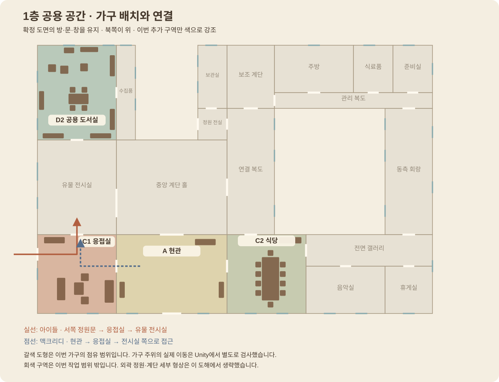

응접실·식당·공용 도서실·현관에 가구와 기본 마감을 적용했습니다. 승인된 도면의 방 배치와 동선을 유지하고, 기존 C+D 보드의 목재·벽난로·가구 분위기를 둥근 형태로 옮겼습니다.

정원문에서 전시실로 가는 길과 맥크리디의 접근 경로를 비워 두었습니다.
정문–현관–계단 홀의 중심축은 가구 없이 열어 두었습니다.
양옆 벤치와 콘솔, 그림을 더했습니다. 가운데 통로와 응접실·식당 입구가 연결됩니다.
다크 월넛과 장밋빛 소파, 세이지색 의자, 낮은 원탁으로 구성한 휴식 공간입니다.
석재 벽난로와 벽난로 위 그림, 부드러운 가구 모서리를 확인할 수 있습니다.
방 북쪽은 비워 두었습니다. 아이들과 맥크리디가 접근하는 두 길을 유지합니다.
앞서 만든 전시실과 이번 응접실이 하나의 길로 연결된 실제 화면입니다.
긴 타원형 식탁과 의자 10개, 식기장·커튼·촛불등을 배치했습니다.
식기·린넨 러너·꽃을 더했습니다. 식탁 양옆과 북쪽 통로로 출입합니다.
손님과 아이들이 함께 이용하는 방입니다. 교수의 개인 서재와 다른 공동 독서 공간으로 구성했습니다.
서가와 독서 테이블을 지나 창가 의자와 작은 원탁, 창 아래 벤치로 이어집니다.
남쪽은 유물 전시실, 동쪽은 작은 수집품 갤러리로 연결됩니다.
가구·재질 분위기를 참고했습니다. 보드의 예전 방 번호와 연결 개념보다 이후 확정된 층별 도면을 우선합니다.
주요 가구와 기본 마감이 들어간 중간 제작본입니다. 직물과 목재의 세부 표현, 창밖 풍경, 생활 소품과 최종 조명은 후속 작업입니다. 벽난로 불은 고정 장식이며 유물 사고·문·가구 상호작용은 아직 연결하지 않았습니다.
다음은 음악·휴게실과 수집품 갤러리, 주방 등 남은 1층 구역입니다. 이후 남은 2층 방과 다락·옷장방, 외관·정원을 이어갑니다.